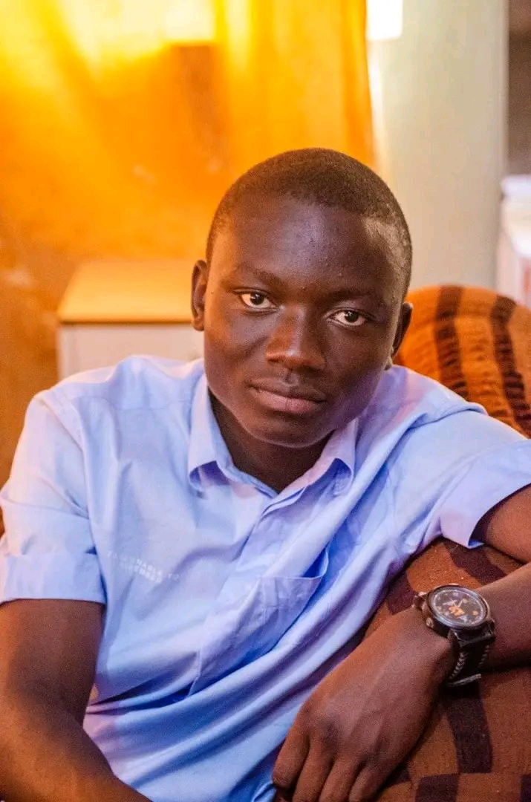

Bonjour, je suis Tony Pemba
Photographe & Vidéaste professionnel

À Propos de Moi
Bonjour ! Je m'appelle Tony Pemba, photographe et vidéaste passionné. Je capture des moments uniques à travers la photographie et la vidéo, que ce soit pour des événements, des portraits ou des projets créatifs.
Mon objectif est de raconter des histoires à travers l'image, en mettant en valeur l'émotion, la lumière et l'esthétique. Je travaille avec créativité et professionnalisme pour offrir des résultats de qualité.
Mes Compétences
| Catégorie | Compétences | Niveau |
|---|---|---|
| Photographie | Portrait, Événementiel, Mariage, Shooting | Expert |
| Vidéo | Tournage vidéo, Clips, Reportage | Avancé |
| Montage | Premiere Pro, After Effects | Avancé |
| Design | Photoshop, Lightroom | Intermédiaire |